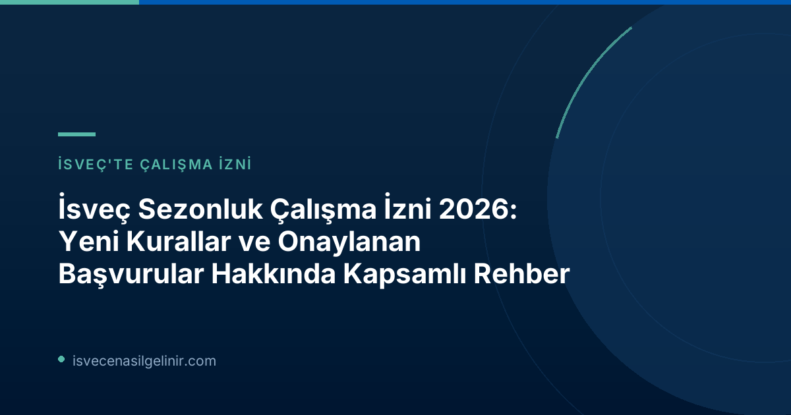

İsveç'te Sezonluk Çalışma İzinlerine Genel Bakış ve 2026 Rakamları
İsveç, her yıl tarım, ormancılık, meyve toplama, turizm ve hizmet sektörleri başta olmak üzere çeşitli alanlarda binlerce sezonluk işçiye ev sahipliği yapıyor. Bu işler genellikle kısa süreli olup, büyük bir kısmı yaz aylarında yoğunlaşıyor. Migrationsverket'in 2026 verileri, bu alandaki başvuruların ve sonuçların bir özetini sunuyor:| Veri Kategorisi | Rakam (2026) |
|---|---|
| Yıllık Toplam Başvuru (Tahmini) | 5.000 kişiye kadar |
| Onaylanan Sezonluk Çalışma İzni | Yaklaşık 3.400 |
| Reddedilen Sezonluk Çalışma İzni | Yaklaşık 1.600 |
İşgücü Sömürüsü Riskleri ve Migrationsverket'in Mücadelesi
Migrationsverket, sezonluk istihdamın bazı sektörlerinde işgücü sömürüsü risklerinin bulunduğuna dikkat çekiyor. Başta ormancılık, meyve toplama ve inşaat sektörleri olmak üzere, bu riskli alanlarda işçi haklarının ihlal edilmemesi için diğer kamu kurumlarıyla (polis, Çalışma Ortamı Kurumu/Arbetsmiljöverket, Vergi Dairesi/Skatteverket ve belediyeler) iş birliği içinde çalışılıyor. Migrationsverket Bölüm Şefi Merima Ilijašević, duyuruda şu ifadelere yer verdi: "Sezonluk iş sektöründe yasalara ve düzenlemelere uyan, iyi çalışma koşulları sağlayan çok sayıda şirket var, ancak aynı zamanda düzenli olarak kötüye kullanımlar da ortaya çıkıyor. Bu yıl da böyle durumlar yaşandı ve sezonluk iş başvurularının reddedilmesine yol açtı." Başvuruların reddedilme nedenleri arasında genellikle şunlar bulunuyor:- Şirketlerin çalışan istihdam etme ekonomik kapasitesindeki yetersizlikler.
- Çalışanların maaş, sigorta ve diğer çalışma koşullarındaki eksiklikler veya standartlara uymaması.
- İş pozisyonlarının doğru ve yasalara uygun şekilde ilan edilmemesi.
İsveç'e Sezonluk İşçi Temin Eden Şirketler ve İşgücünün Kökeni
Her yıl, İsveç genelinde yaklaşık 200 İsveçli şirket, AB dışı ülkelerden gelen sezonluk işçileri istihdam ediyor. Bu işgücünün önemli bir kısmını (%90 civarı) Tayland vatandaşları oluşturuyor. Taylandlı işçiler, özellikle meyve toplama gibi belirli alanlarda İsveç ekonomisine önemli katkı sağlıyor.Orman Meyvesi Toplayıcıları İçin Yeni Kurallar ve AB Direktifi
Sezonluk iş kolları arasında, orman meyvesi toplayıcılığı özellikle dikkat çeken bir alan. Bu sektörde geçmiş yıllarda yaşanan kötüye kullanımlar nedeniyle Migrationsverket, orman meyvesi toplayıcılarına yönelik başvuların büyük bir kısmını reddetmek zorunda kalmıştı. Haziran ayında yürürlüğe giren yeni düzenlemelerle birlikte, ormanda meyve toplayıcısı olarak yapılan istihdam, çalışma koşulları ne olursa olsun, AB dışı vatandaşlara çalışma izni hakkı vermeyecek. Ancak, Migrationsverket buradaki bir ayrımı netleştiriyor:
Önemli Bilgi: Orman meyvesi toplayıcılarının çoğu, AB'nin sezonluk istihdam direktifi kapsamında başvuruda bulunuyor. Bu direktif kapsamında yapılan başvurular, yeni yerel kısıtlama dışındadır ve hala değerlendirilmektedir.
2026 yılı için AB Sezonluk İstihdam Direktifi kapsamında meyve toplama işi için yaklaşık 1.500 başvuru karara bağlandı. Bu başvuruların tamamı Tayland vatandaşları tarafından yapılmış olup, yaklaşık 950'si onaylanırken, 600'ü reddedildi. Migrationsverket, diğer riskli sektörlerde olduğu gibi, bu alandaki kötüye kullanımları engelleme çalışmalarına devam edeceğini belirtiyor. sverigemedborgarskapsprov.com adresinden İsveç vatandaşlığı ve göçmenlik süreçleri hakkında faydalı bilgilere ulaşabilirsiniz.
İsveç Sezonluk Çalışma İzni (AB Yönergesi) Temel Şartları 2026
AB Sezonluk İstihdam Direktifi kapsamında İsveç'te sezonluk çalışma izni alabilmek için karşılanması gereken temel şartlar şunlardır:| Şart | Açıklama |
|---|---|
| Maaş ve Çalışma Koşulları | Maaş, sigorta ve diğer çalışma koşulları, İsveç kollektif sözleşmeleri veya sektördeki genel uygulamalardan daha düşük olmamalıdır. Maaş, tam zamanlı bir iş için belirlenen en düşük ücrete eşit veya üzerinde olmalıdır (yarı zamanlı çalışmalar için de geçerlidir). |
| Konaklama ve Sağlık Sigortası | Çalışanın, izin süresi boyunca uygun standartlarda bir konaklama yeri ve kapsamlı bir sağlık sigortasına erişimi olmalıdır. |
| Rekrutman Süreci | İşe alım süreci, İsveç'in AB içindeki taahhütlerine uygun olmalıdır (ilanlar hem İsveç'te hem de AB içinde en az 10 gün süreyle yayınlanmalıdır). |
| Ülkeye Dönüş Niyeti | Çalışan, sezonluk izni sona erdikten sonra anavatanına geri döneceğine dair niyetini ve bunu kanıtlama yeteneğini göstermelidir. |
| İkamet Durumu | Çalışan, AB içinde ikamet etmiyor olmalıdır. |
Sıkça Sorulan Sorular (SSS)
İsveç'te sezonluk iş nedir?
Sezonluk iş, genellikle belirli bir yılın belirli dönemlerinde (örneğin yaz aylarında) yoğunlaşan, kısa süreli istihdam türleridir. Tarım, ormancılık, meyve toplama, turizm ve hizmet sektörleri bu tür işlerin yaygın olduğu alanlardır.Kimler İsveç'te sezonluk çalışma iznine başvurabilir?
Genellikle AB dışı ülkelerden gelen ve AB sezonluk istihdam direktifi kapsamındaki şartları karşılayan kişiler başvurabilir. Başvuru sahibinin AB içinde ikamet etmiyor olması gerekmektedir.Sezonluk çalışma izni başvurularının reddedilme nedenleri nelerdir?
Reddedilme sebepleri genellikle şirketin finansal kapasitesi, çalışanlara sunulan koşulların yetersizliği, iş ilanlarının usulüne uygun yapılmaması veya orman meyve toplayıcılığı için yeni yürürlüğe giren kısıtlamalar (AB direktifi kapsamında değilse) olabilir.Referanslar
Migrationsverket Resmi Duyurusu: 3 400 tillstånd beviljade för säsongsarbete
İsveç Vatandaşlık Testi Bilgileri: sverigemedborgarskapsprov.com
İsveç'e Göçmenlik Sürecinizde Profesyonel Destek Alın
İsveç'e yerleşme, çalışma veya vatandaşlık süreçleri hakkında daha fazla bilgi edinmek için uzman ekibimizle iletişime geçin. İsveç Vatandaşlık Testi hakkında güncel bilgilere ulaşmak için sitemizi ziyaret edebilirsiniz.